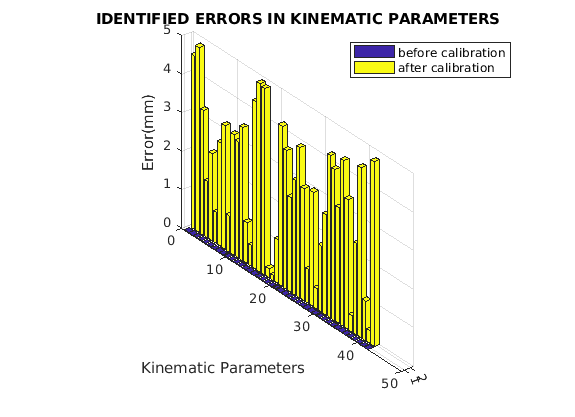

Contents
RBE 521- Legged Robotics - Midterm - Fall 2022
Calibration of a Hexapod Table by simulation
function calibrate
Initial Guess
%% The initialguess are the nominal values given in the table
Initialguess = [92.1597 84.4488 0 305.4001 111.1565 0 604.8652;
27.055 122.037 0 -56.4357 320.0625 0 604.8652;
-119.2146 37.5882 0 -248.9644 208.9060 0 604.8652;
-119.2146 -37.5882 0 -248.9644 -208.9060 0 604.8652;
27.055 -122.037 0 -56.4357 -320.0625 0 604.8652;
92.1597 -84.4488 0 305.4001 -111.1565 0 604.8652;]';
Minimization of Cost Function
lsqnonlin is used to minimize the cost function by taking the initial guess and predicting the kinematic parameters
IdentifiedValues = lsqnonlin(@CF , Initialguess)'
Local minimum possible. lsqnonlin stopped because the final change in the sum of squares relative to its initial value is less than the value of the function tolerance. IdentifiedValues = 96.6611 81.7606 1.0684 305.2600 115.0700 2.6210 604.4299 22.2475 125.2510 -0.5530 -55.2815 322.9818 4.2181 607.2473 -122.4645 36.6422 4.3538 -244.8080 208.0058 3.9348 600.4438 -120.6838 -34.4564 -4.9010 -252.5734 -211.8781 -3.0122 605.9031 24.7768 -125.0488 -4.8473 -53.9679 -320.6115 4.3181 604.5251 91.3449 -80.9842 0.2519 302.4251 -109.4326 3.3816 600.0615
Given Real and Nominal Values
Declaring the real and nominal values for comparision
%simulated real kinematic parameters real_values = [96.6610 81.7602 1.0684 305.2599 115.0695 2.6210 604.4299; 22.2476 125.2511 -0.5530 -55.2814 322.9819 4.2181 607.2473; -122.4519 36.6453 4.3547 -244.7954 208.0087 3.9365 600.4441; -120.6859 -34.4565 -4.9014 -252.5755 -211.8783 -3.0128 605.9031; 24.7769 -125.0489 -4.8473 -53.9678 -320.6115 4.3181 604.5251; 91.3462 -80.9866 0.2515 302.4266 -109.4351 3.3812 600.0616;] %nominal kinematic parameters nominal_values = [92.1597 84.4488 0 305.4001 111.1565 0 604.8652; 27.055 122.037 0 -56.4357 320.0625 0 604.8652; -119.2146 37.5882 0 -248.9644 208.9060 0 604.8652; -119.2146 -37.5882 0 -248.9644 -208.9060 0 604.8652; 27.055 -122.037 0 -56.4357 -320.0625 0 604.8652; 92.1597 -84.4488 0 305.4001 -111.1565 0 604.8652;];
real_values = 96.6610 81.7602 1.0684 305.2599 115.0695 2.6210 604.4299 22.2476 125.2511 -0.5530 -55.2814 322.9819 4.2181 607.2473 -122.4519 36.6453 4.3547 -244.7954 208.0087 3.9365 600.4441 -120.6859 -34.4565 -4.9014 -252.5755 -211.8783 -3.0128 605.9031 24.7769 -125.0489 -4.8473 -53.9678 -320.6115 4.3181 604.5251 91.3462 -80.9866 0.2515 302.4266 -109.4351 3.3812 600.0616
Bar graph for the values obtained
error_real_nominal = real_values-nominal_values error_values = real_values - IdentifiedValues figure graphs = [abs(reshape(error_values,[],1)),abs(reshape(error_real_nominal,[],1))]; bar3(graphs); title('IDENTIFIED ERRORS IN KINEMATIC PARAMETERS') zlabel('Error(mm)') ylabel('Kinematic Parameters') legend({'before calibration','after calibration'},'Location','northeast')
error_real_nominal =
4.5013 -2.6886 1.0684 -0.1402 3.9130 2.6210 -0.4353
-4.8074 3.2141 -0.5530 1.1543 2.9194 4.2181 2.3821
-3.2373 -0.9429 4.3547 4.1690 -0.8973 3.9365 -4.4211
-1.4713 3.1317 -4.9014 -3.6111 -2.9723 -3.0128 1.0379
-2.2781 -3.0119 -4.8473 2.4679 -0.5490 4.3181 -0.3401
-0.8135 3.4622 0.2515 -2.9735 1.7214 3.3812 -4.8036
error_values =
-0.0001 -0.0004 0.0000 -0.0001 -0.0005 0.0000 -0.0000
0.0001 0.0001 -0.0000 0.0001 0.0001 -0.0000 0.0000
0.0126 0.0031 0.0009 0.0126 0.0029 0.0017 0.0003
-0.0021 -0.0001 -0.0004 -0.0021 -0.0002 -0.0006 0.0000
0.0001 -0.0001 0.0000 0.0001 -0.0000 0.0000 -0.0000
0.0013 -0.0024 -0.0004 0.0015 -0.0025 -0.0004 0.0001
 end